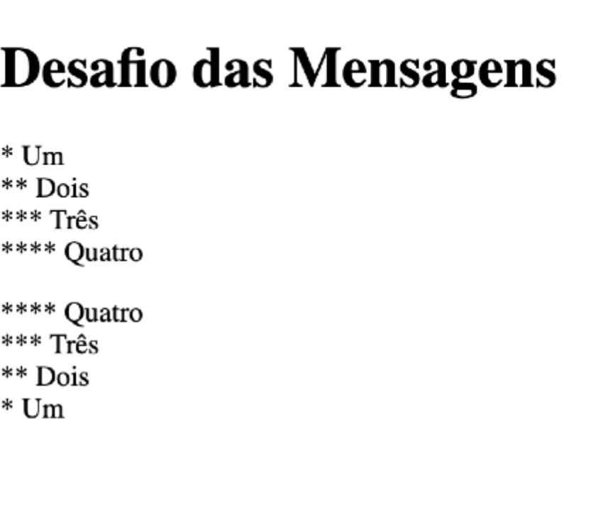
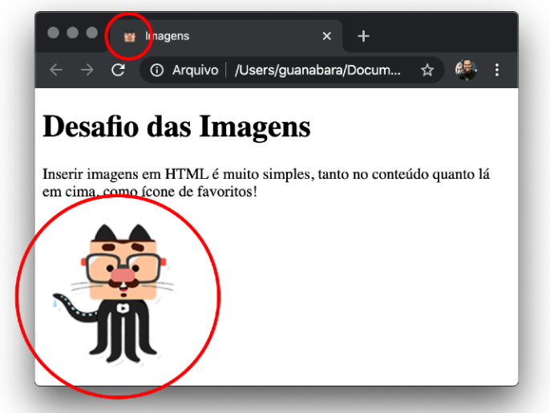
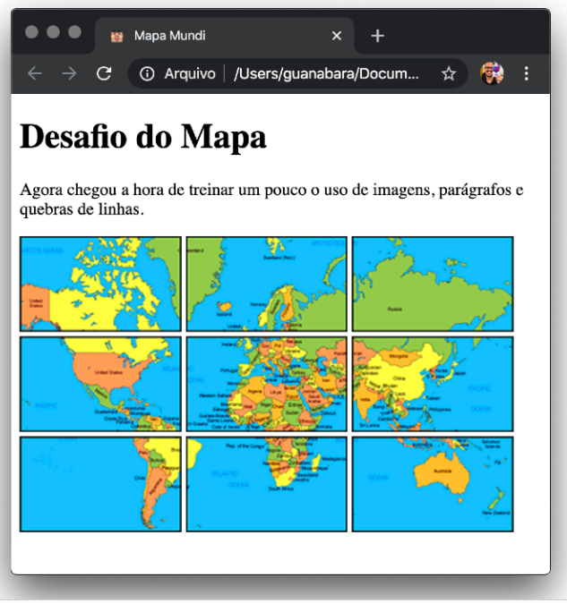
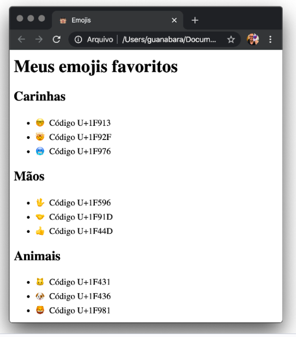
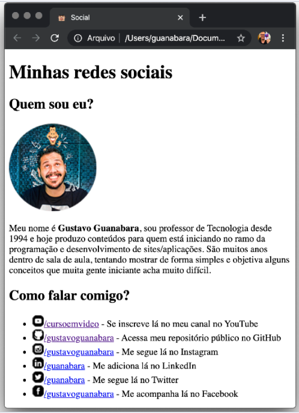
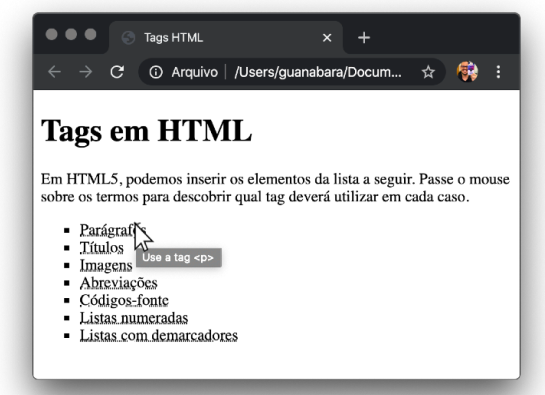

Aulas de Html 5 e CSS 3
Primeiro Desafio
Parágrafos e quebras de linhas
Escrever um programa para exibir os textos de um asterisco até quatro asteriscos e também mostre o resultado ao contrário, com uma mistura de parágrafos e quebras de linhas.
Clique no link a seguir para ver o RESULTADO

Segundo Desafio
Imagens (na página e no favicon)
Escrever um programa para exibir uma imagem na página e que mostre o favicon alterado nos favoritos.
Clique no link a seguir para ver o RESULTADO

Terceiro Desafio
Imagens, quebra de linha e parágrafos
Escrever um programa para exibir uma imagem que é formada por várias imagens, utilizando os conceitos aprendidos sobre parágrafos e quebra de linha mesclando com as imagens. Clique no link a seguir para ver o RESULTADO

Quarto Desafio
Emojis
Escrever um programa para exibir uma lista de emojis favoritos, três de cada:
- 3 carinhas
- 3 mãos
- 3 animais
- 3 esportes
- 3 comidas
- 3 objetos
Clique no link a seguir para ver o RESULTADO

Quinto Desafio
Redes Sociais
Vamos criar uma página que divulgue as redes sociais. Teremos uma foto, uma breve descrição e os links para os perfis. O objetivo é que você crie sua própria página e colocar os links.
Clique no link a seguir para ver o RESULTADO

IMPORTANTE para um profissional no mundo da programação, um perfil no LinkedIn e um repositório no GitHub são essenciais! Se você ainda não tem, reserve um tempo pra criar o seu.
OBSERVAÇÃO A imagemdo perfil terá o tamanho de 150x150 pixels. Você pode fazer um recorte redondo na imagem usando o GIMP.
Sexto Desafio
Tags em HTML
Agora é hora de mostrar o que você está aprendendo de HTML 5. Esse exercício faz uma lista de coisas que podem ser adicionadas em uma página.
O desafio aqui é arrumar uma maneira que, ao passar o mouse sobre um termo, mostre qual é a tag usada pra fazer isso. Veja o exemplo abaixo:
Clique no link a seguir para ver o RESULTADO

Na lista acima, foi colocado sete elementos. No seu exercício você pode adicionar muito mais. Só não pode fazer menos do que sete itens.